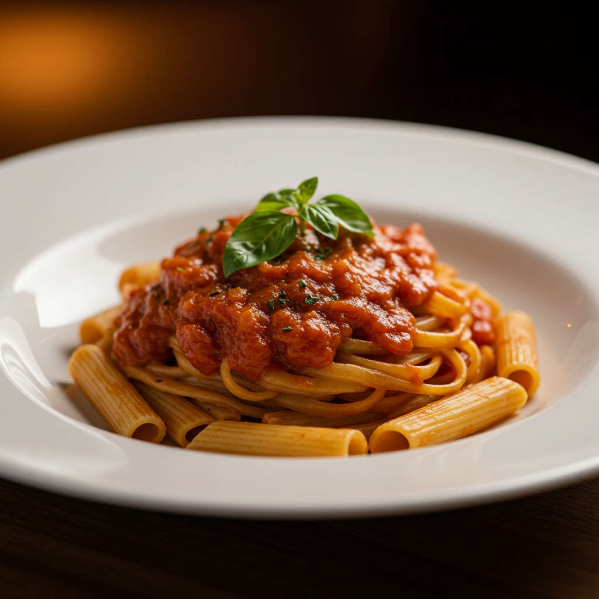
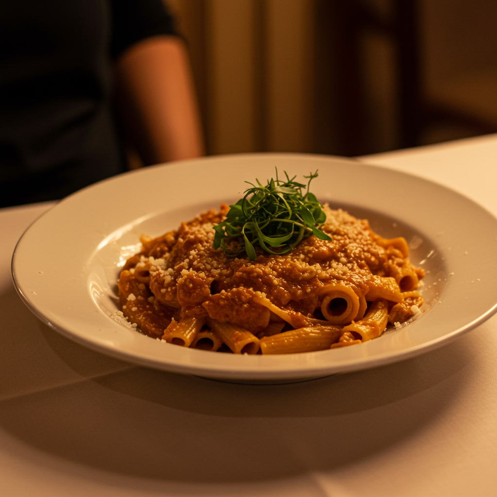
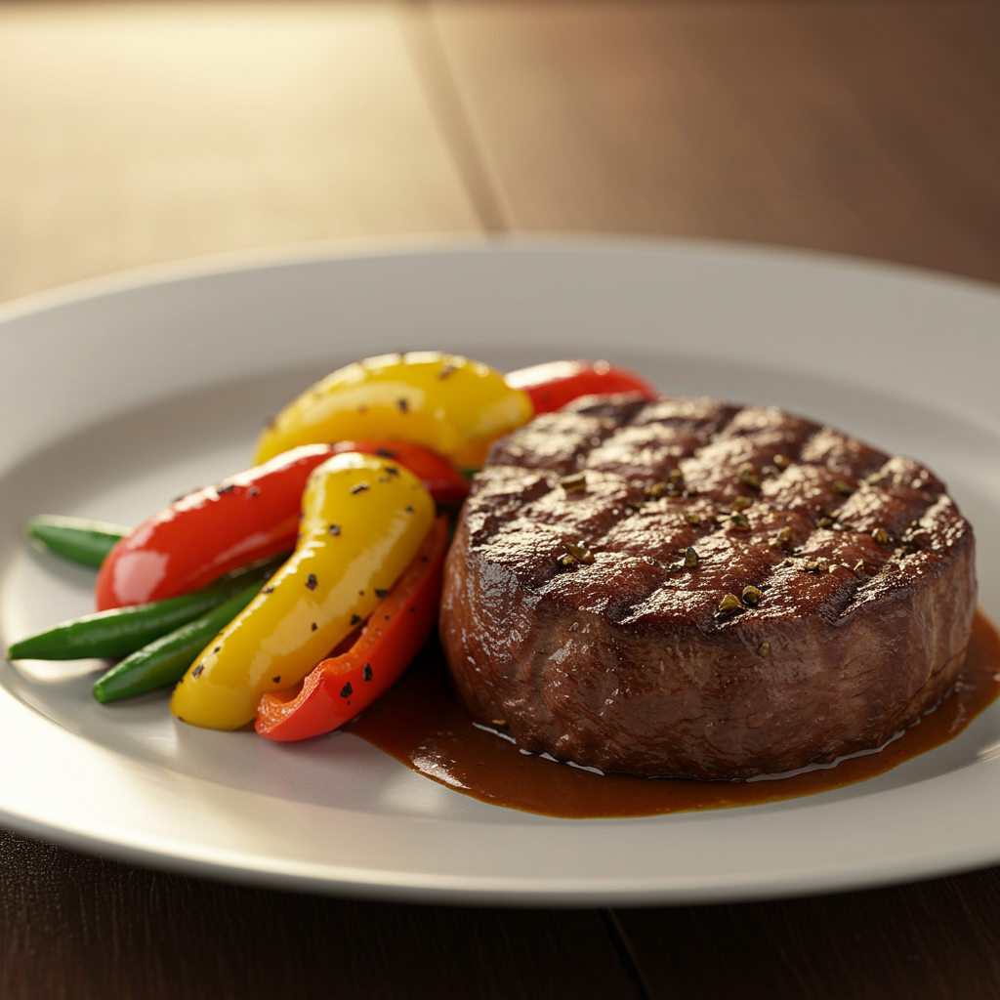
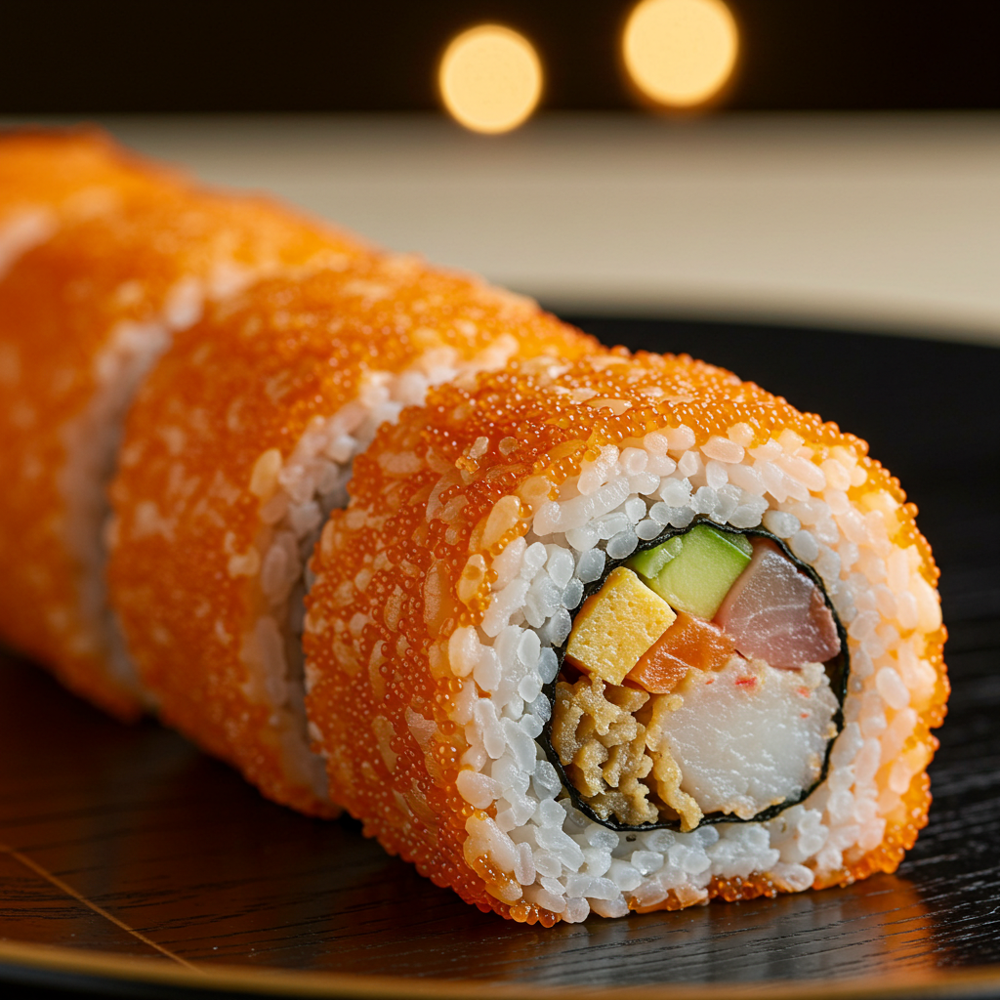
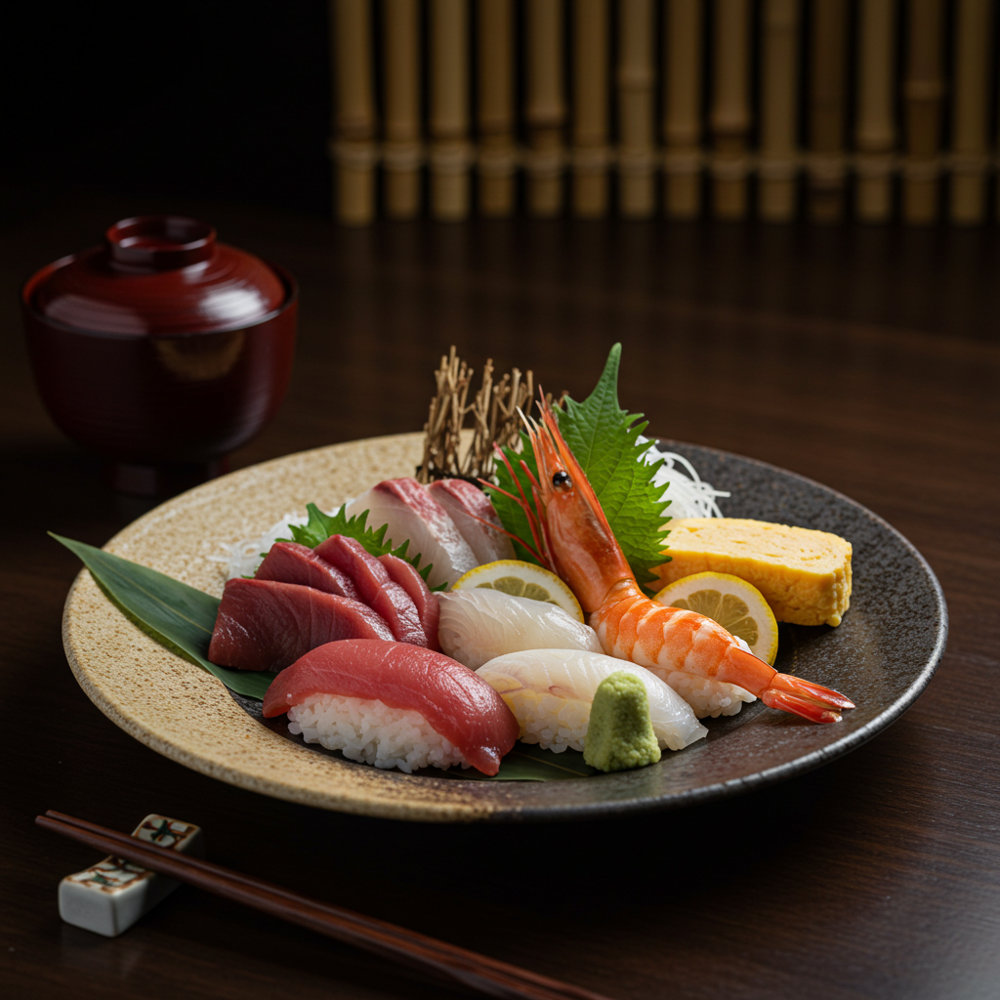

Soft and fluffy Japanese milk bread, brushed with miso-honey
butter and sprinkled with toasted sesame seeds. Warm, lightly
sweet, and irresistibly indulgent..
Macaroni Miso Medley

This East-meets-West creation blends al dente macaroni with a
creamy miso-based sauce, topped with seared salmon, crispy
shallots, and a sprinkle of sesame seeds for a rich umami
experience.
Emerald Leaf Delight

Fresh, crisp leaf wraps filled with sticky rice, succulent shrimp,
and a touch of sweet chili dipping sauce. A light yet flavorful
dish that’s perfect for a refreshing, guilt-free indulgence.
Trinity Elixir Rum
A perfect fusion of rum, coconut cream, and pineapple juice,
creating a tropical escape in every sip.
Steak of the Rising Sun

A perfectly grilled steak, marinated in a secret blend of Japanese
spices, served alongside miso-buttered vegetables. Every bite
delivers a smoky, umami-rich depth that lingers on the palate.
Zen Rice Balls

Hand-pressed rice balls infused with seaweed, sesame, and spicy
tuna, then drizzled with a delicate yuzu aioli. A simple yet
deeply satisfying bite-sized delight.
Neptune's Ocean Kiss

A delicately pan-seared fish fillet, glazed in a citrus-infused
soy sauce, served with pickled radish and steamed jasmine rice.
This dish captures the fresh, briny essence of the ocean in every
bite.